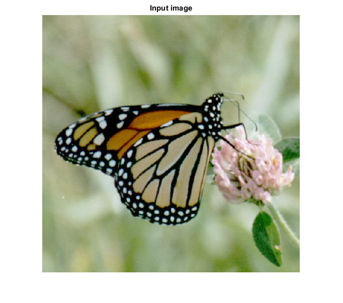
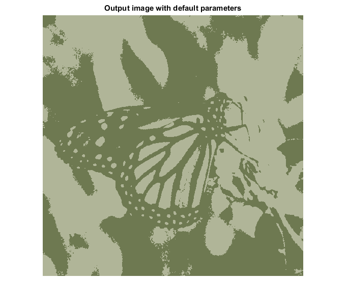
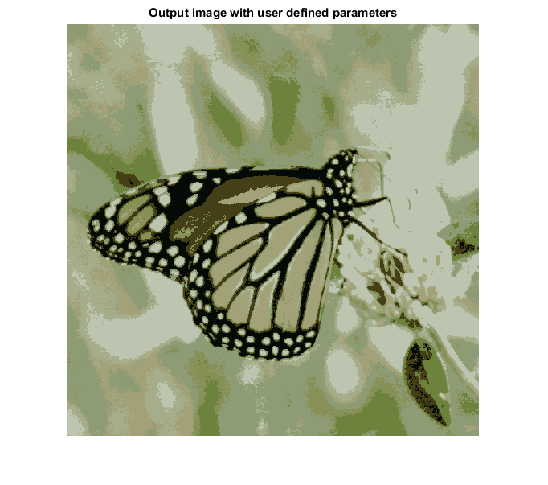
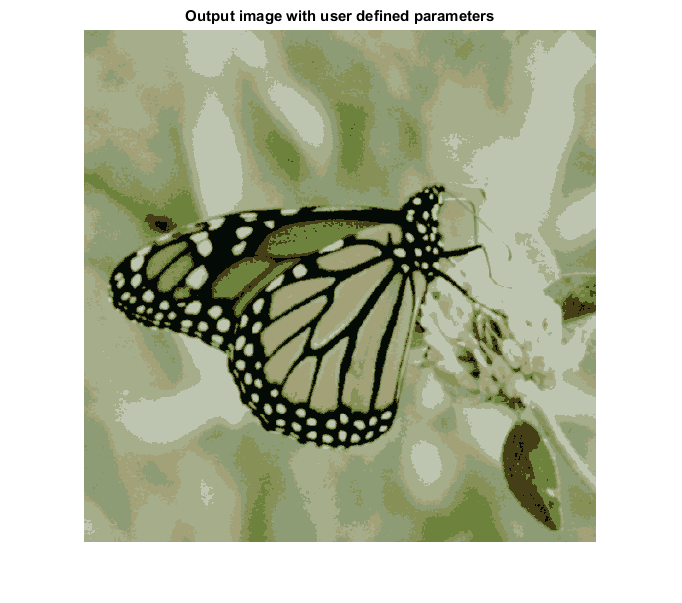

MEDIAN_CUT_CVIP
median_cut_cvip() -Image segmentation using median-cut method.
Contents
SYNTAX
outImage = median_cut_cvip(inImage, numColors, option)
Input Parameters include:
- inImage - 1-band input image of MxN size or 3-band input image of MxNx3 size. The input image can be of uint8 or double class.If double class, the function assumes the data range of image is from 0 to 1.
- numColors - Number of colors. NumColors = 2(default)
- option - Option for mapping of color vectors method. If Option = 1, it directly assigns the average color of a cube to all pixels associated to that cube. If Option = 2, it map each of the original color vectors to the closest average color(Euclidean distance method) Option = 1(default)
Output Parameter includes :
- outImage - Segmented image having same size and same class of input image
DESCRIPTION
The function performs the segmentation using median-cut method, originally developed to map 24-bit color images to 8-bit color. It works by finding the maximum spread along the red, green or blue axes, and then dividing the color space with the median value along that axis. This division of the color space continues until the number of desired colors is reached. At this point, all the color vectors in a given subdivision of the color space are used to find an average color for that subdivision. After all the average colors are found, we implemented two methods to assign one of the average colors to each pixel.In method 1, we directly assign the average color of a cube to the pixels that have same colors of the color cube. In method 2, the algorithm goes back and maps each of the original color vectors to the closest one. Euclidean distance method is implemented to find the closeness.
REFERENCE
1. Scott E Umbaugh. DIGITAL IMAGE PROCESSING AND ANALYSIS: Applications with MATLAB and CVIPtools, 3rd Edition.
EXAMPLE
% Read image I = imread('butterfly.tif'); % Calling function default numColors = 2, Option = 1 O1 = median_cut_cvip(I); % number of colors N = 8; % Calling function with user defined parameters numColors = 8, but option = 1 as default O2 = median_cut_cvip(I,N); %numColors = 8 and Euclidean distance method is selected O3 = median_cut_cvip(I,N,2); % Display input image figure;imshow(I);title('Input image') % Display output image figure;imshow(O1,[]);title('Output image with default parameters'); figure;imshow(O2,[]);title('Output image with user defined parameters'); figure;imshow(O3,[]);title('Output image with user defined parameters');   
CREDITS
Author:Norsang Lama, March 2017
Copyright © 2017-2018 Scott
E Umbaugh
For updates visit CVIP Toolbox Website